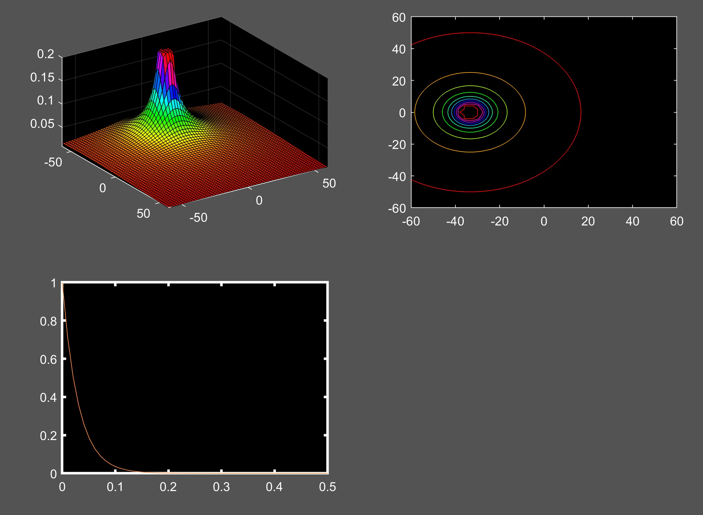

Laplace of a RC circuit
The laplace-transfomation can be used to solve differential equations. Here I visualize the laplace transformation of a Capacitor discharging over a Resistor
First we derive the differential equation of the capacitor voltage over Time. Then we use the Laplace Transformation on the equation. Then we rearrange the equation to the laplace-Transformation of the capacitor voltage

Here I solved a differential equation of a capacitor discharging over a capacitor. By visualizing the Absolute value of the Laplace tranformant aganist its complex inputs I hope to gain some in depth understanding how the poles of the Transformation tell us about the function in the time domain

some more text.........